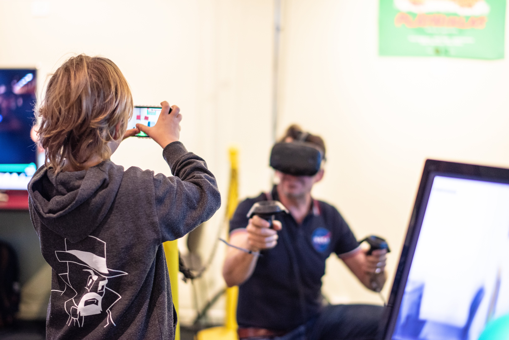
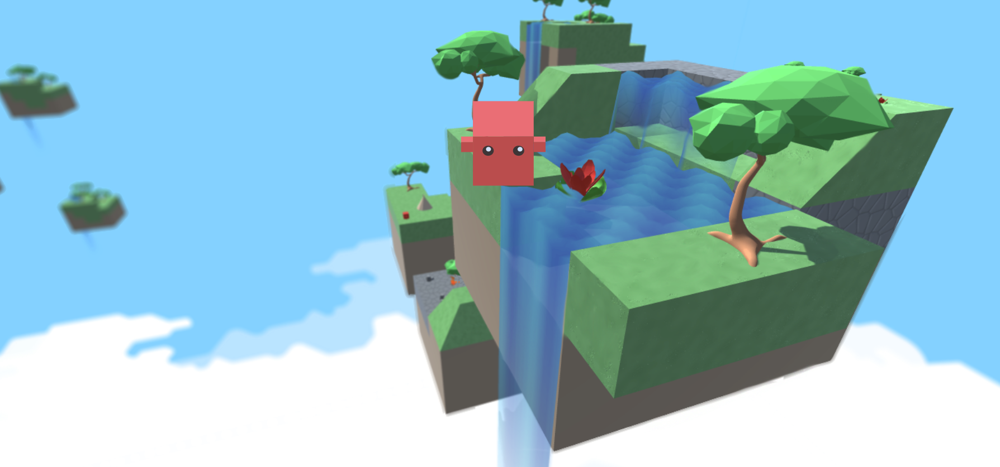

Photo by: Linnea Holm
Plåtniklas
Interaction programmer | Modeler
Plåtniklas is a game that integrates both VR and AR, where the two worlds co-exist on a one to one scale. Thus the AR player can see the VR player, and vice versa. They will see the same environment, and the changes made to that environment. Both of them can interact with the world and its objects, as well as with each other. This is a project which ran from mid september 2018 to december 2018 and is part of the course Advanced graphics and interaction at the Royal Institute of Technology. The project is developed by using Unity, HTC Vive and ARKit
Website: http://platniklas.com

Soar & Fall
Project Leader | Modeler | Interaction programmer
This is a small game demo developed in a team of 5 members.

Spotify groups
Designer
In this project the task was to build a high-fidelity prototype to enhance a music product. We choose to work with spotify and try to improve it. Through several iterations of our idea, and working accordingly to the double diamond scheme we ended up with our final prduct Spotify groups. The project was created using Justinmind.
Github: https://github.com/fnoren17/Spotify-Groups
Presentation video: https://youtu.be/-G6FcEKLjrA

Multimodal
Developer
A project made in Unity with VR support. We evaluated whether controller-based steering or head movement-based steering was superious in regards to efficiency and effectiveness. We found that using the head to steer was better in all regards, and caused less motion sickness than that of a controller.
Working web-based version (laggy): Multimodal project
Presentation video: https://youtu.be/JBwnQ7EBQ7g

Mission Emission
Designer
Our project in the Information Visualization course given at KTH. Our group took an offer from SEI to develop a prototype for visualizing emissions via nautical export from brazil. I had the role of front-end developer and UI-designer. Click the live version for more info.
Github: https://github.com/fnoren17/infovis18
GithubIO: https://fnoren17.github.io/infovis18/

Movie App
Developer | Designer
>A project in a dynamic web course. The idea of the product is to save movies of intrest to your account and mark them as seen or not. And also be able to see what other users have on their lists.